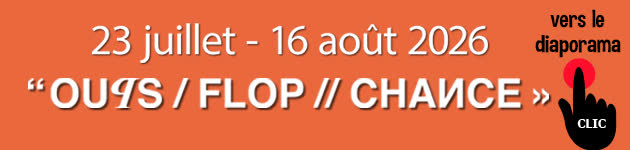
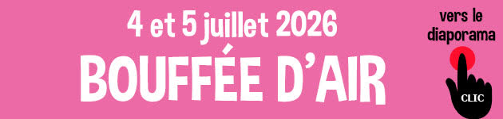
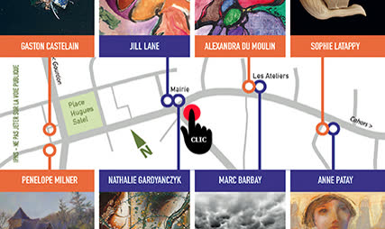
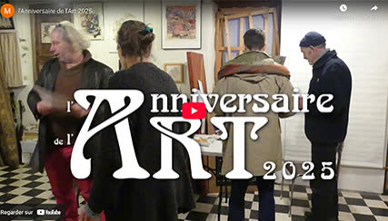
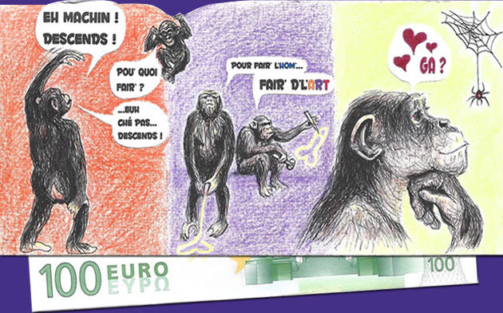
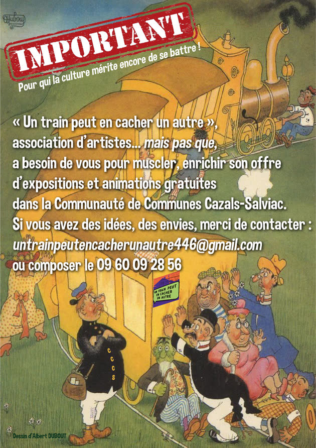
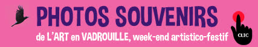
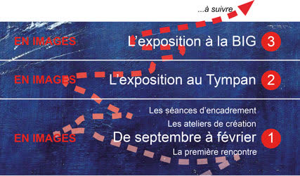
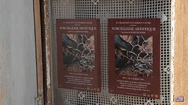

Albums, captations et diaporamas. Les albums s’ouvrent sur Google Photos : commencez par cliquer sur la première photo.

« Oups / Flop // Chance »
L’exposition d’art contemporain de l’été, à Cazals.

Bouffée d’air
Le parcours festif d’art en campagne des 4 et 5 juillet.

JAAO 2025
Quelques images des Journées des Ateliers d’Artistes d’Occitanie 2025.

Anniversaire de l’Art 2025
La captation vidéo réalisée par Wlad, sous la carte de vœux d’Alain.

La carte de vœux d’Alain
« Eh machin ! Descends ! » Un billet de 100 « euro de l’art », pour l’Anniversaire de l’Art.
Si EROS s’invitait ?
Chez Sonia, en juillet 2024. Les photos de Joël Devienne et une vidéo de RuraleTV, à voir absolument.
La captation d’EROS
La captation de l’exposition réalisée par Wlad D. Funkiewicz.

Le Train a besoin de vous
« Un train peut en cacher un autre » a besoin de vous pour muscler et enrichir son offre d’expositions et d’animations gratuites dans la Communauté de communes Cazals-Salviac. Des idées, des envies ? Écrivez-nous.

L’Art en vadrouille
Photos souvenirs du week-end artistico-festif.

Des monts, en images
De septembre à février, puis l’exposition au Tympan et à la BIG. Le catalogue et quelques diaporamas.
Inspiration
Petit diaporama de l’exposition. Son livre d’or est dans la rubrique Livre d’or.

Sorcellerie artistique
La vidéo de François Stuck sur Martine Sezer et son exposition.
Les archives plus anciennes (« 68 – l’imagination au pouvoir » à Saint-Pompon, Errances, Images autrement à Gindou…) restent consultables sur la page Photos du site actuel.